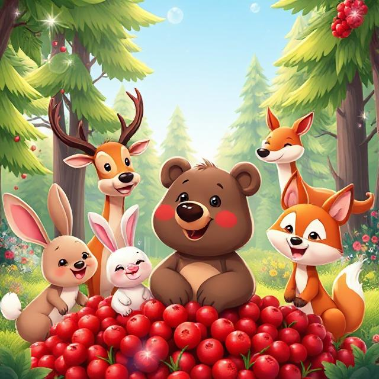
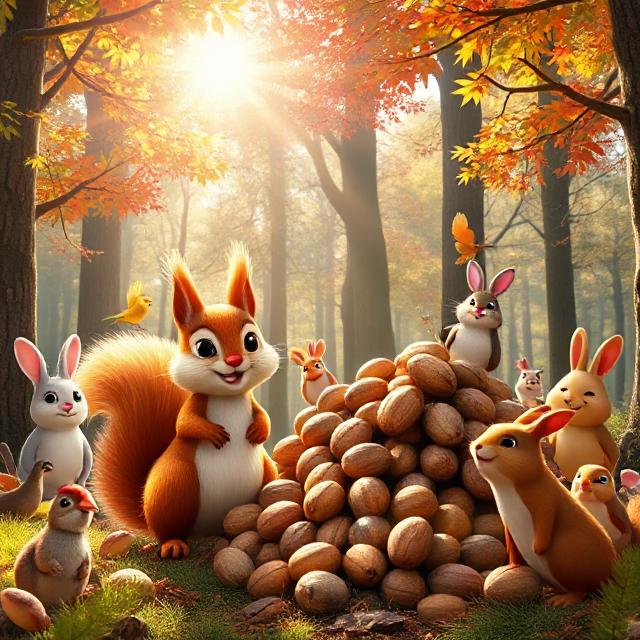
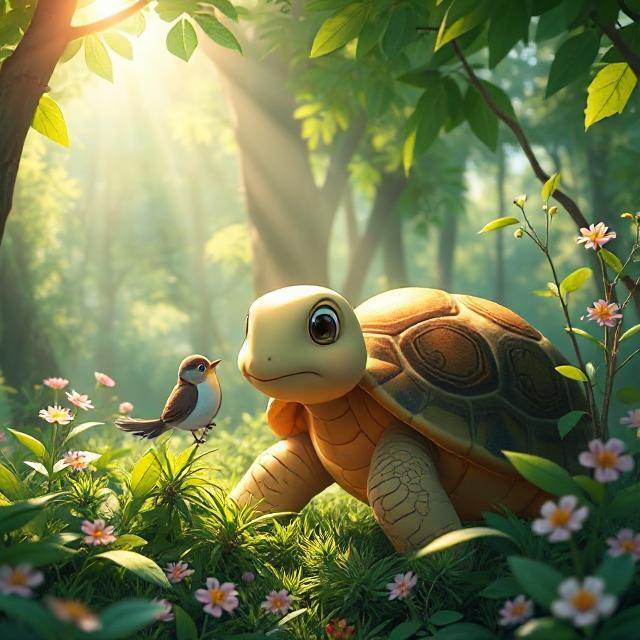
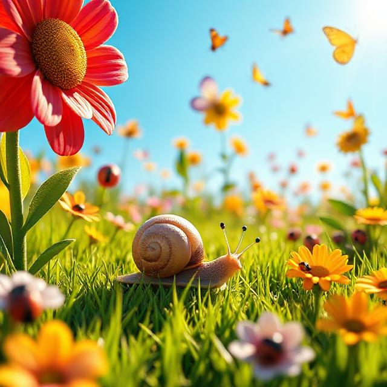

BED TIME STORIES

STORIE: a small Kindness
-
Up in the night sky, a tiny star named Twinkle was afraid to shine. “I’m too small,” Twinkle whispered, hiding behind a cloud. One night, a lost bunny looked up from a dark forest. Twinkle gathered courage… and sparkled just a little. The bunny saw the light and followed it home. From then on, Twinkle shined every night, just in case someone needed it. The other stars clapped and twinkled with joy. Twinkle was no longer shy — just proud. Even the smallest light can guide the way. All it takes is a little bravery.
- MORAL:
Even small lights can lead others home.
STORIE: Love everything
In the sky lived a little cloud named Puffy, who loved watching the world below. One day, he saw the flowers wilting and the grass turning brown. The other clouds said, “Don’t rain yet — it’s not time!” But Puffy couldn’t wait. He poured his gentle rain down, drop by drop. The flowers lifted their heads and smiled. Children laughed and danced in the puddles. The big clouds saw how happy everyone was. From then on, they shared their rain too. All because one small cloud cared.
- MORAL
Kindness doesn’t wait. Even small actions can bloom great beauty.

STORIE: Lulu the Lion Cub Learns to Listen
Lulu was a playful lion cub who never liked to listen. One day, the jungle animals went to the watering hole, and Wise Owl told everyone to stay on the path. But Lulu didn’t hear him—she ran off on her own. Soon, she got lost and felt scared. Luckily, Wise Owl found her, and Mama Lion came to help. Lulu hugged her mom and said, “I’ll listen next time.” From then on, Lulu always listened carefully.
- MORAL
Listening helps keep us safe.

STORIE: Benny the Bear Shares His Berries
Benny the Bear loved picking sweet berries in the forest. One day, he found a whole bush full of red, juicy berries. He wanted to keep them all to himself. But soon, his friends—Rabbit, Deer, and Fox—came by, looking hungry. Benny thought for a moment, then smiled and said, “Let’s share!” They all sat together, eating berries and laughing. Benny felt happy inside, not just from the food, but from being kind.
- MORAL
Sharing brings happiness to everyone.

STORIE: enjoy your joy
High in the mountains of Eritrea, a little girl named Lina loved the rain more than sunshine. One morning, dark clouds rolled in, and soft raindrops began to fall. Instead of hiding, Lina ran outside and twirled with joy. animals peeked from behind trees to watch her dance. , Lina’s laughter filled the sky, and soon, the forest felt alive and happy. The rain, once quiet and cold, now felt warm and magical.
- MORAL
Joy is meant to be shared— your happiness can brighten the world around you.

STORIE: Ella the Elephant’s Big Ears
Ella the Elephant had very big ears. animals teased her, but Ella loved to listen. One day, she heard a tiny cry for help far away. Using her big ears, she found a lost baby bird and helped it find its family. Everyone realized Ella’s big ears were a special gift.
- MORAL
What makes you different can be your greatest strength.

STORIE:Mini and Big: A Tale of Two Squirrels
Mini was a small, fast squirrel. Big was a big, slow squirrel. They were best friends, even though they were very different. One day, their favorite golden acorn went missing. Mini wanted to run and search fast. Big wanted to think and look slowly. Together, they used both their skills. Mini spotted the acorn under leaves. Big dug it up with his strong paws. They cheered and shared it together.
- MORAL
Listening helps keep us safe.

STORIE: Tami the Brave Turtle
Tami the Turtle lived near a quiet pond surrounded by tall grass and buzzing dragonflies. She was smaller than the other turtles and moved slower, but her heart was big and brave. One hot day, a baby duckling got stuck in some reeds by the pond. All the animals were scared to go near, but Tami didn’t hesitate. Slowly but surely, she crawled over and gently freed the duckling. Everyone cheered as the duckling waddled back to its family. Tami smiled shyly, happy she could help. From that day on, the animals knew—being brave doesn’t mean being fast; it means caring enough to act.
- MORAL
You don’t have to be big or fast to be brave—you just need a kind heart.

STORIE: Sammy the Snail’s Slow Journey
Sammy the Snail wanted to reach the big flower, but he was very slow. Other animals rushed past him and laughed. But Sammy kept going, step by step. When he finally arrived, he enjoyed the sweetest nectar. The animals learned to appreciate patience and determination.
- MORAL
Slow and steady wins the priz
STORIE:Whispers of the Night Forest üåô
As night fell, the forest grew quiet. Birds rested on branches, and animals gathered below. The stars twinkled gently in the dark sky. Wise Owl said, “Every kind act creates a star. That’s how the night gets its light.” Everyone listened. Then — twinkle! — a new star appeared above them. “Was that us?” asked a little bird. Owl smiled. “Maybe it was.” The forest slept peacefully, glowing under the stars made by lov
- MORAL
Kindness makes the world shine brighter.